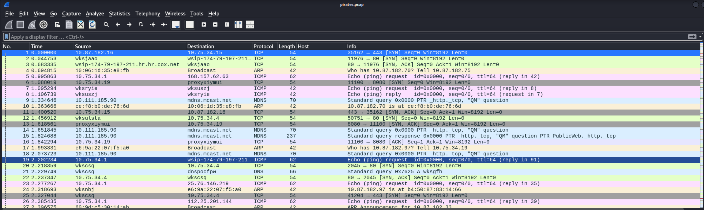
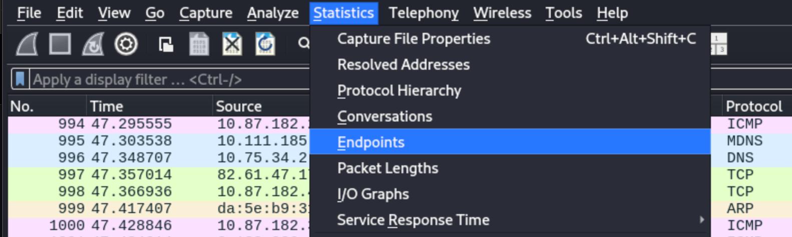
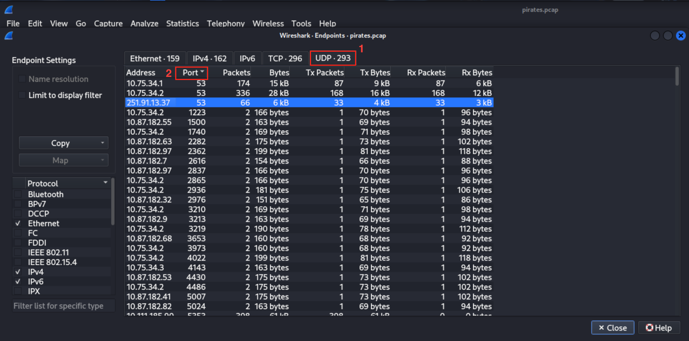
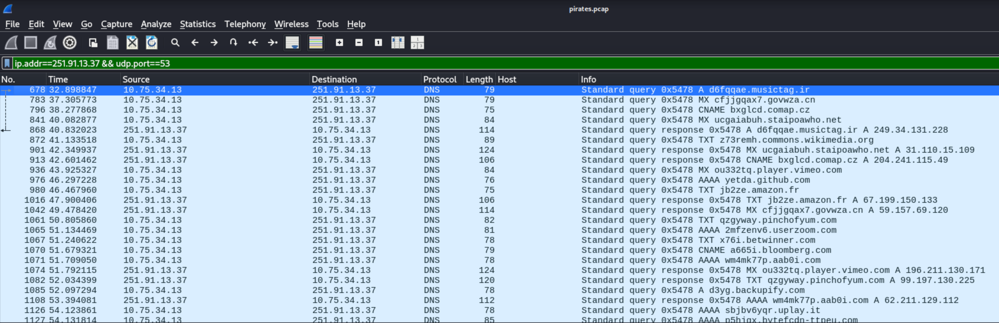
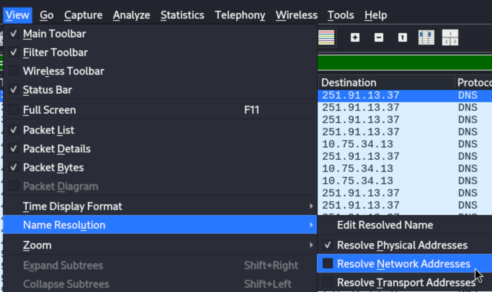
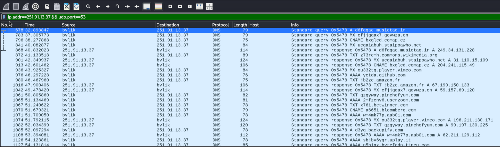

>_ Dive into (Wire)Shark-infested waters and find the C2 treasure.
The threat actor (TA) has contacted us with their demands and now we have some "evidence" of what sensitive data may have been stolen. But how did they get the sensitive data in the first place? And importantly, do we need to worry about them still being active in our environment?
We've received an alert that may be related to this threat actor activity and could clue us in as to where and how they stole the data they are now ransoming. But where exactly are they and what are they doing, besides holding your sensitive data for ransom?
In the vast ocean of network traffic monitored by the company's Network Security team, you need to find out:
The Network Security team has packet captures ("PCAPs") of the company's network traffic around the time of the alert, but due to a tight Information Technology (IT) budget and a lack of resources, it's limited to a small window of time.
Great. Sarcastically send a reminder to yourself to make the IT team "walk the plank!" for how much this corner-cutting will cost the company!
You'll just have to work with what's available, and the clues the Incident Management team has provided about the TA's demands. Time to get your hands dirty and start digging (or swimming) through the PCAPs! Take the leap into the (Wire)Shark-infested waters and find the treasure!
This challenge is to identify which machine is sending the stolen data out of your environment and where it went, by looking at how protocols can be used and abused for malicious intent.
From the provided PCAP file, you need to identify 2 important pieces of information:
The flag should be in the format:
For example, if the [compromised-hostname] is gaming-PS4 and the C2 IP address is 1.2.3.4, these flags would be accepted:
gaming-PS4_1.2.3.4GaMiNg-pS4_1.2.3.4 — the case doesn't matterPorts and protocols in common use:
In this challenge we are supplied with a pcap file called pirates.pcap. After downloading the file, organize your working directory in Kali Linux with the following commands. If you do not have Wireshark, use the resource links provided to download and install it.
Make a new directory:
Move the file into the new directory:
Change to the new directory:
Verify the file is in the new directory and review permissions:
Open the pcap file in Wireshark:
Inside the application, we can see the traffic captured around the time of the alert. Notice the following protocols:

// Click image to enlarge — Wireshark packet capture overview of pirates.pcap
There are a lot of packets to inspect with these protocols. Instead of inspecting traffic one at a time, let's first use statistics to determine the network endpoints detected in the packet capture. At the top menu bar, click on Statistics and then Endpoints.

Here is what we know based on the challenge:
There is a technique adversaries use to exfiltrate data over a C2 channel. In the MITRE ATT&CK Framework, this is a publicly known exfiltration technique where adversaries can use uncommon protocols to send data out of Personalyz.io. When reviewing the list of protocols available in the packet capture, the one that stands out the most is DNS.
We know DNS is a UDP protocol that is typically on port 53. Let's take a look in the UDP section of the Endpoints module.

// Click image to enlarge — UDP Endpoints filtered by port number
We can see a public IP address of 251.91.13.37 in this list. There are 33 packets being transported and received with this IP address.
Let's apply this IP address as a filter by right-clicking on the highlighted line item → Apply as Filter → Selected. Then close the Endpoints module.

// Click image to enlarge — applying the public C2 IP as a Wireshark display filter
We can now see Wireshark is filtering traffic with the following filter:
We can see DNS traffic being sent from our private IP address of 10.75.34.13 to the public IP address 251.91.13.37. We found one part of the flag — the Command-and-Control (C2) IP address.
However, we are still missing the name of our compromised machine. This can be resolved by applying the Name Resolution filter for network protocols in Wireshark. This allows us to view numerical addresses in a human-readable format.

At the top menu bar, select View → Name Resolution → Resolve Network Addresses.

// Click image to enlarge — Name Resolution reveals the compromised hostname
Boom! We resolved the network address and got the name of the endpoint: bvlik.
In this challenge, we inspected Personalyz.io network traffic using Wireshark to identify the compromised service sending DNS queries to an external public IP address belonging to Shadow Gopher.
In the MITRE ATT&CK framework, this tactic falls under Command and Control (TA0011) — a compromised machine on the Personalyz network is communicating to an external endpoint owned by Shadow Gopher.
In the MITRE ATT&CK framework, this technique falls under Application Layer Protocol: DNS (T1071.004) — the protocol used for communication between the compromised Personalyz machine and a Shadow Gopher server is DNS on port 53.
A compromised machine on the Personalyz network sending DNS requests on port 53 to an external endpoint owned by Shadow Gopher, establishing Command and Control (C2) communication to facilitate data exfiltration.
The following mitigation measures can be applied to this TTP. Click a link to view full details in the MITRE ATT&CK Framework.
| Mitigation | Description |
| M1037 — Filter Network Traffic | Utilize network appliances and endpoint software to filter ingress, egress, and lateral network traffic. Other mitigations to implement include protocol-based filtering, network segmentation, and application layer filtering to block anomalous DNS traffic to unknown resolvers. |
| M1031 — Network Intrusion Prevention | Use Intrusion Detection System (IDS) signatures to block traffic at network boundaries. |
The following detection data sources are applicable to this TTP. Click a link to view full details in the MITRE ATT&CK Framework.
| Data Source | Description |
| DS0029 — Network Traffic Content | Network Packet Captures (Wireshark, Zeek, Suricata/Snort with PCAP logging), host-based logging, and cloud/SaaS traffic collection to inspect C2 traffic, exfiltration, and suspicious activity within network communications. |
| DS0029 — Network Traffic Flow | Network flow logs (NetFlow, sFlow, Zeek/Bro flow logs), host-based logging, and cloud/SaaS flow monitoring for capturing session-level details including source/destination IPs, ports, protocols, timestamps, and data volume to identify anomalous outbound DNS patterns. |
{kind=link}
{kind=link}
{kind=link}
{kind=link}